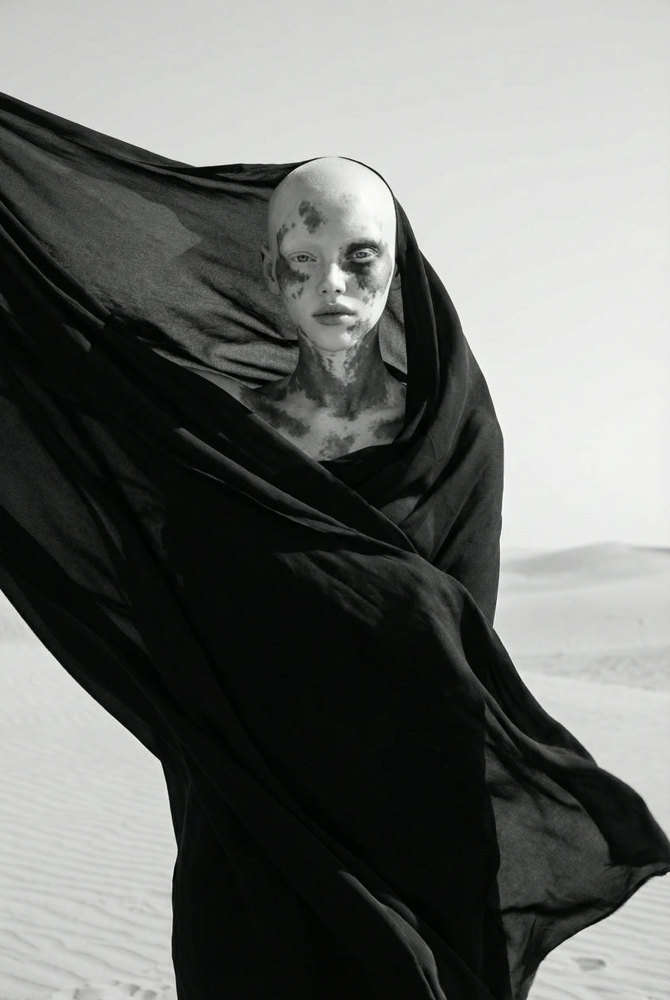
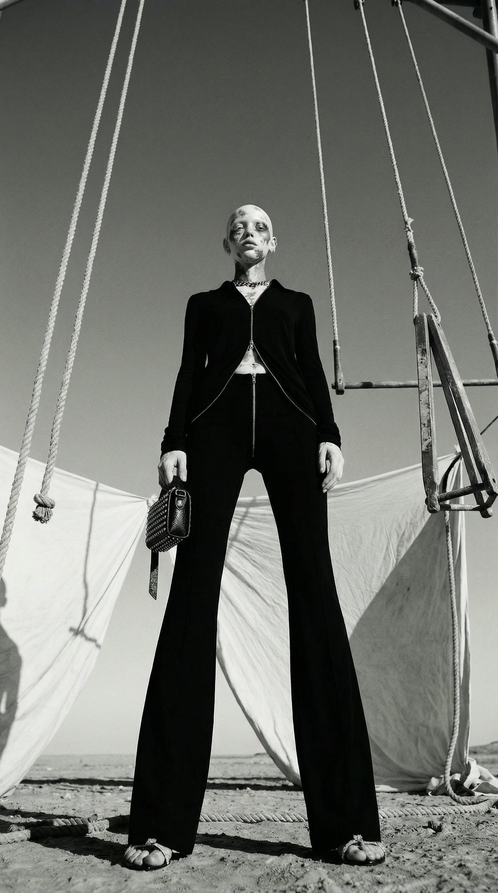
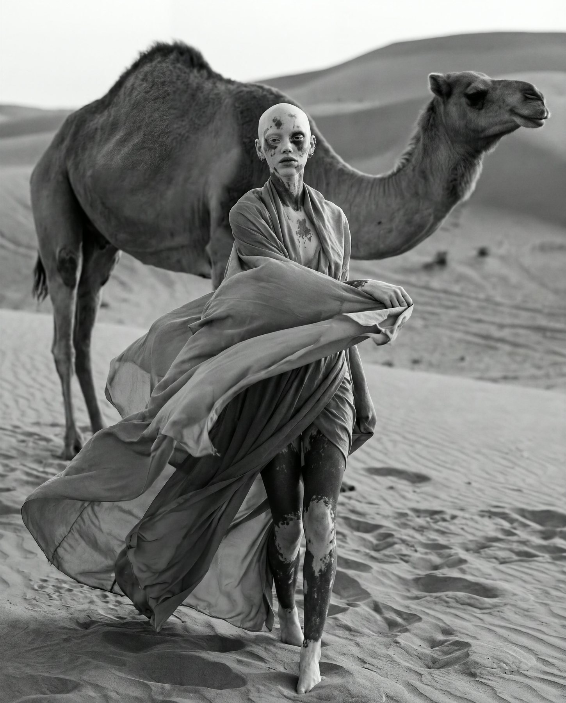

Desert Veil
Brand withheld
White canvas strung across the sand, moving in the wind. A woman with vitiligo at the centre, her skin echoing the shadows on the cloth. Black tailoring against bleached ground, a cheetah beside her, calm; further on, a camel. Nothing is decorative: the desert strips the image down to skin, cloth and silence.



The campaign filmNineteen seconds: same desert, same canvases, same dress as the stills.